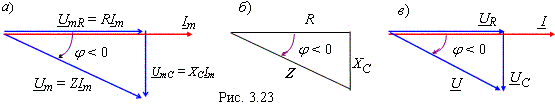

,
откуда амплитуда искомого тока
| |
(2.44) |
| - полное сопротивление RC-цепи. | (2.45) |

Из треугольника сопротивлений (рис. 2.23, б) RC-цепи определим угол сдвига фаз
| , | (2.46) |
откуда следует, что значение ёмкостного сопротивления XC берётся со знаком минус.